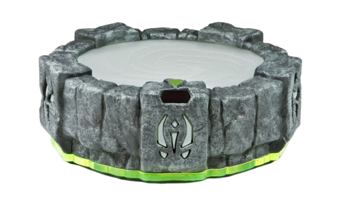

Portal
Waiting for Cemu

On the portal
Trapped villains
Name each captured villain, browse with Alt+↑ / Alt+↓, then lock it in with Alt+Ctrl+0. Element traps: Alt+Q Magic, W Water, E Tech, R Fire, Y Earth, U Life, I Air, O Undead, P Light, L Dark. Empty traps are preferred.
Element shortcuts
Alt + 1–9 / − · Add Shift for Player 2. Shortcuts work in Cemu.Click to load · Edit to assign
Swap Force perk shortcuts
Alt + Q W E R Y U I O · Add Shift for Player 2.Loads a full pair, or changes the active Swap Force bottom.